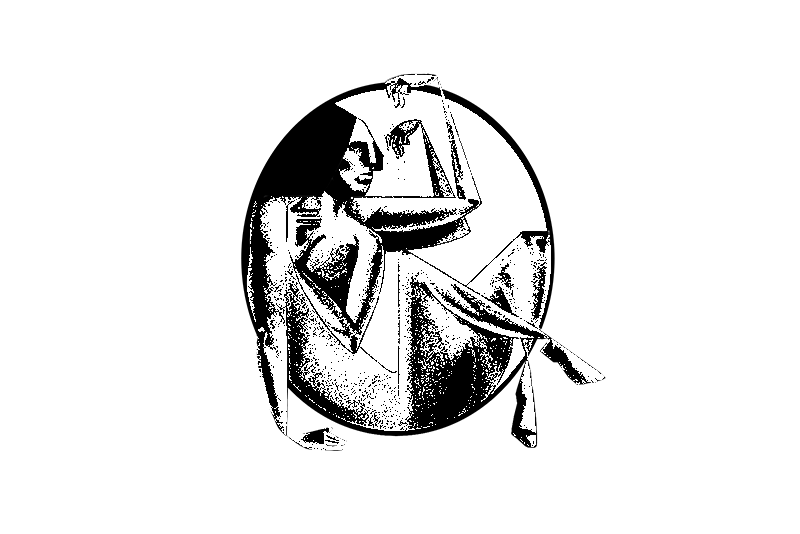
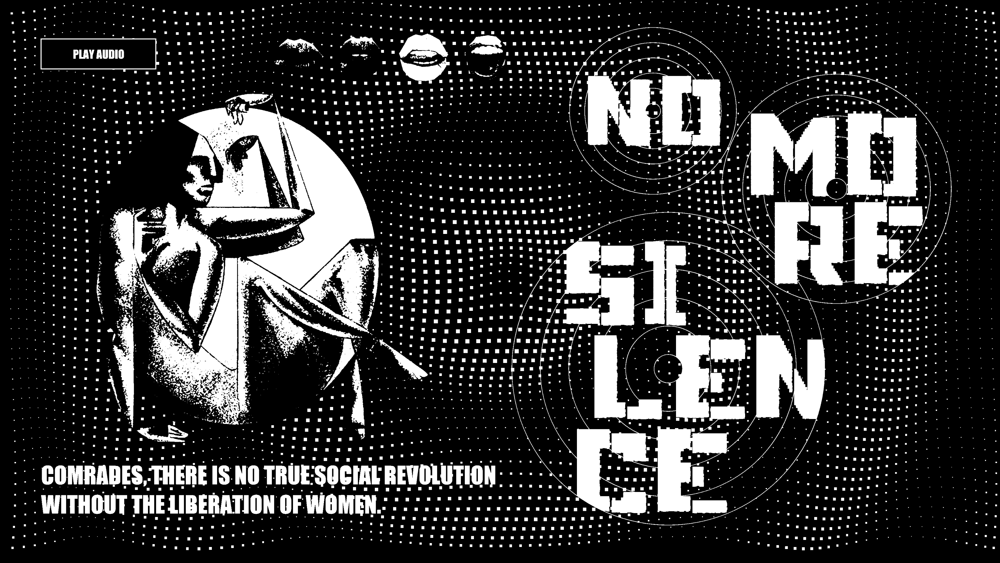
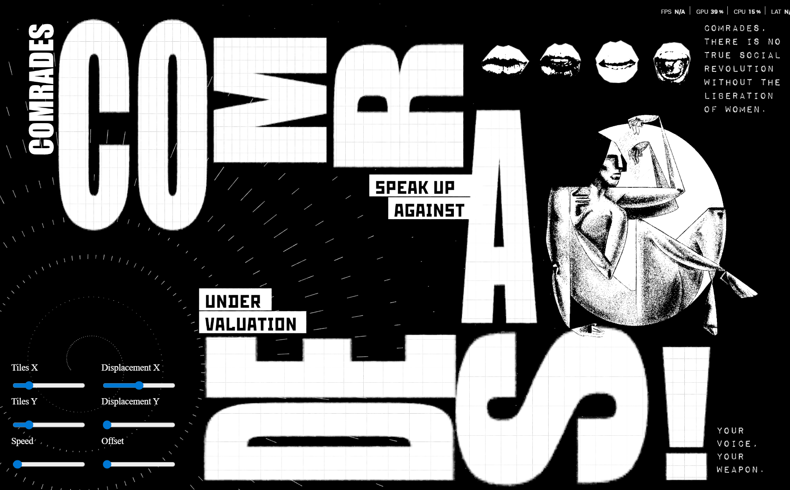

JOIN THE
MOVEMENT
"THERE IS NO
TRUE SOCIAL
REVOLUTION
WITHOUT THE
LIBERATION
OF WOMEN."
- THOMAS
SANKARA
AGAINST
UNDER-
VALUATION
SPEAK UP

NO MORE
SILENCE

ABOUT THE MOVEMENT
Thomas Sankara's assertion cuts directly to the core of UN Sustainable Development Goal 5 (Gender Equality).
Achieving true equality requires a radical dismantling of the systemic barriers that hold women back.
In the modern workplace, this revolution isn't fought with weapons; it is based by challenging the quiet, everyday biases that result in the chronic undervaluation of women's labor, ideas, and leadership. For too long, complicit silence has allowed these inequalities to survive in the shadows.
To build a truly equitable society, we cannot wait for passive institutional change. No more silence. Speak up against undervaluation.
Showcase 01:

To fully join the movement and disrupt the silence, this project requires users to mock harass and microphone.
Showcase 02:

To fully join the movement and disrupt the silence, this project requires users to mock harass and microphone.